Daftar Artikel Blog Jasa Bangun Rumah
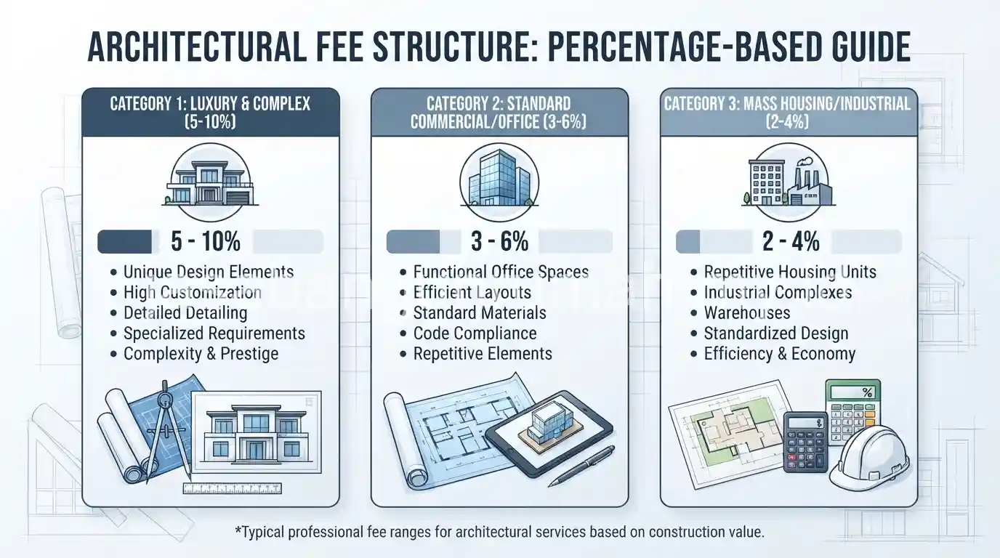
Hitung Biaya Jasa Arsitek: Persentase vs Tarif per M2
Bingung sistem persentase RAB atau tarif per meter persegi untuk jasa arsitek? Simak perbandingannya dan cek estimasi biayanya di sini.
Baca SelengkapnyaJasa Kontraktor Rumah Mewah Surabaya, Spek Premium
Cari kontraktor rumah mewah Surabaya dengan detail finishing rapi dan material premium? Konsultasi dan survey lokasi gratis, hubungi kami sekarang.
Baca Selengkapnya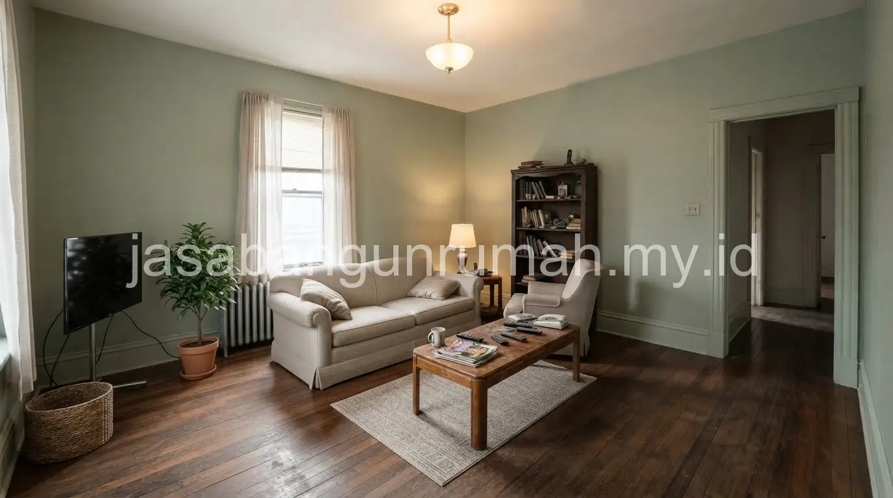
7 Strategi Renovasi Rumah Hemat Biaya Tanpa Kompromi
Ingin renovasi rumah dengan budget terbatas namun tetap maksimal? Simak 7 strategi renovasi hemat biaya berikut sebelum memulai proyek Anda.
Baca Selengkapnya
Pricelist Jasa Gambar Arsitek 2026, Tarif Lengkap
Cari jasa gambar arsitek dengan tarif jelas dan standar SNI untuk denah serta 3D visual rumah Anda? Konsultasi gratis, hubungi kami sekarang.
Baca Selengkapnya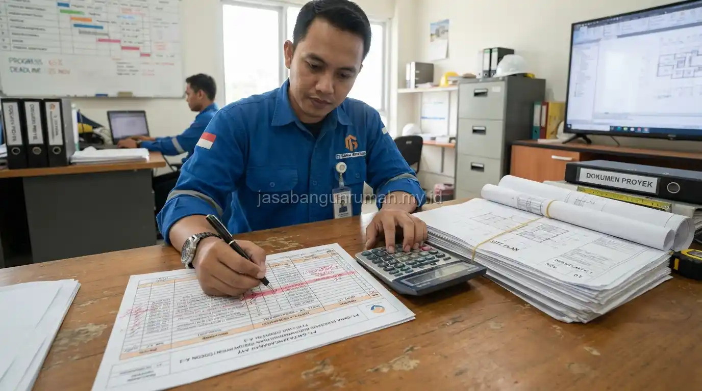
Cara Membaca RAB Proyek Kontraktor Agar Tidak Tertipu
Bingung membaca RAB proyek dari kontraktor? Simak cara memverifikasi volume, harga satuan, dan item pekerjaan agar tidak dirugikan.
Baca SelengkapnyaTips Memilih Kontraktor Bangun Rumah Terpercaya
Takut tertipu kontraktor yang kabur di tengah jalan? Simak tips memilih kontraktor bangun rumah terpercaya dan hindari modus kontraktor nakal.
Baca Selengkapnya
Cara Mendesain Layout Rumah Tumbuh yang Fleksibel
Ingin membangun rumah bertahap sesuai budget? Simak cara mendesain layout rumah tumbuh agar perluasan di masa depan tetap rapi dan efisien.
Baca Selengkapnya
Baja Ringan vs Kayu untuk Atap: Mana Lebih Awet?
Bingung pilih rangka atap baja ringan atau kayu? Simak perbandingan daya tahan, biaya, dan kemudahan pasang lalu cek estimasi biayanya di sini.
Baca Selengkapnya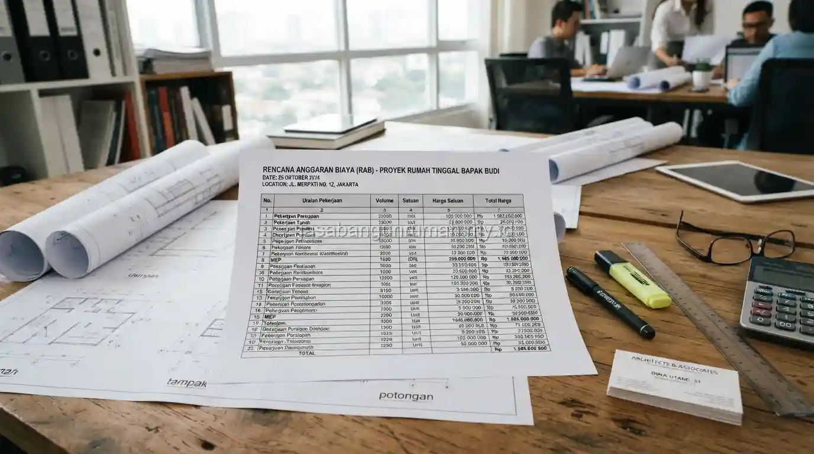
Jasa Pembuatan RAB Rumah Profesional untuk KPR
Butuh RAB rumah yang detail dan rapi untuk pengajuan KPR atau tender? Kami menyusun RAB profesional dengan analisis harga satuan lengkap.
Baca Selengkapnya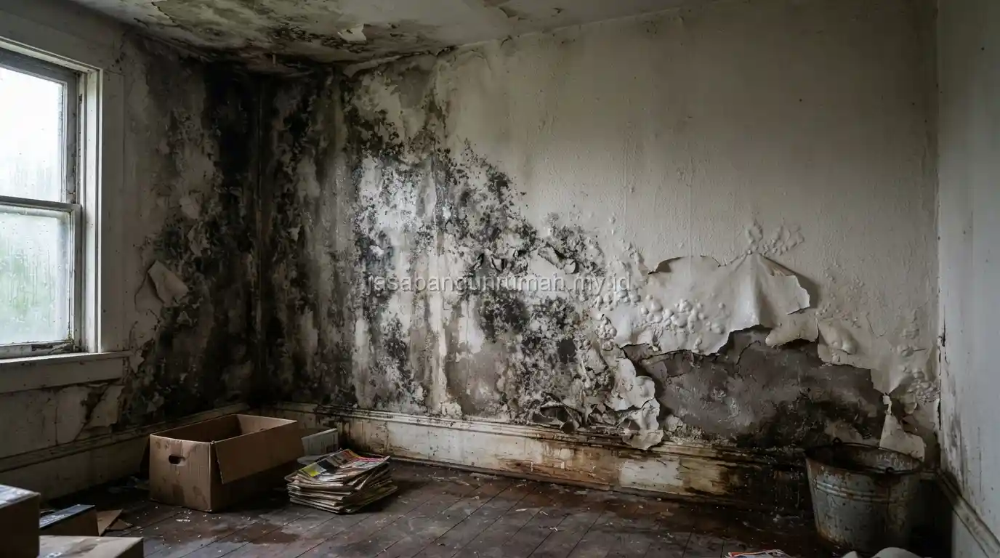
Cara Mengatasi Dinding Lembab dan Berjamur
Dinding rumah lembab dan berjamur akibat rembesan air hujan? Simak cara mengatasinya secara bertahap dan konsultasikan solusi permanennya di sini.
Baca Selengkapnya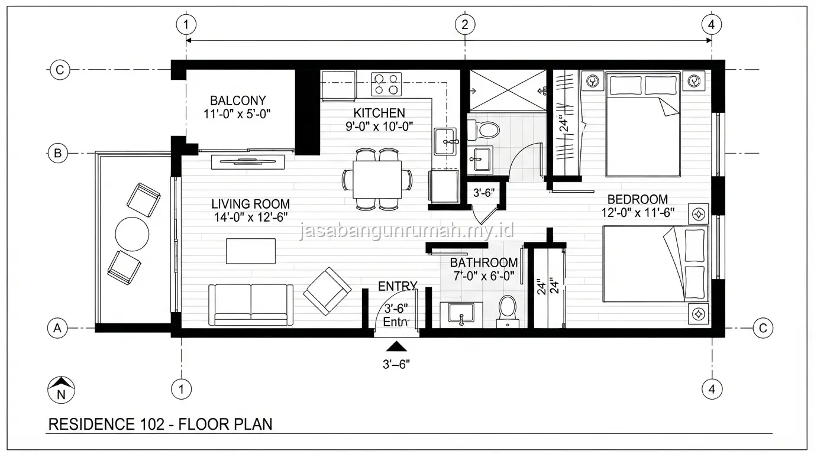
Tahapan Desain Interior: 2D, 3D, hingga Moodboard
Ingin tahu proses pengerjaan interior fitting dari layout 2D hingga moodboard? Simak tahapannya dan cek estimasi biayanya di sini.
Baca Selengkapnya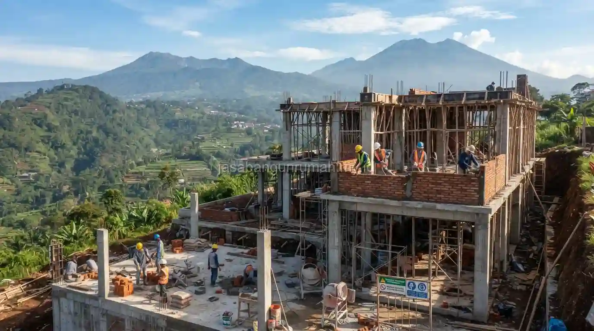
Kontraktor Bangun Rumah Bandung, Legalitas Beres
Cari kontraktor bangun rumah Bandung dengan desain custom dan legalitas PBG terurus? Konsultasi dan survey lokasi gratis, hubungi kami sekarang.
Baca Selengkapnya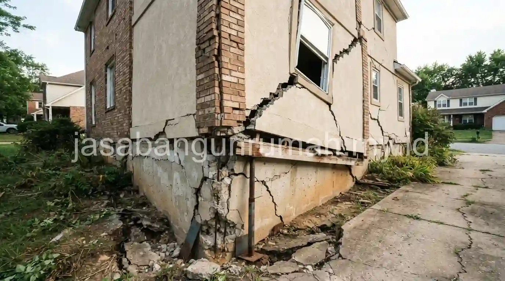
10 Kesalahan Fatal Saat Bangun Rumah Baru yang Bikin Biaya Membengkak
Waspadai 10 kesalahan fatal saat bangun rumah baru yang bikin biaya membengkak dan struktur bermasalah. Simak penjelasannya di sini.
Baca Selengkapnya
Estimasi Biaya Renovasi Atap Rumah: Ganti Rangka Baja Ringan dan Genteng Baru
Ingin ganti rangka atap ke baja ringan dan genteng baru? Simak estimasi biaya renovasi atap rumah berikut dan cek simulasinya di sini.
Baca SelengkapnyaJasa Arsitek Rumah Mewah: Desain Klasik, Modern, dan Kontemporer Custom
Cari jasa arsitek rumah mewah dengan desain klasik, modern, atau kontemporer custom? Konsultasi konsep gratis, hubungi tim kami sekarang.
Baca Selengkapnya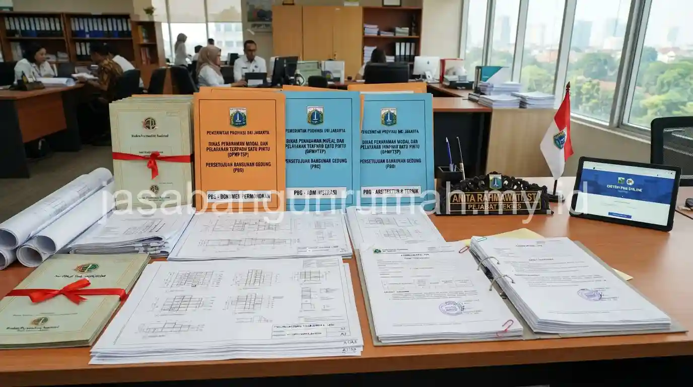
Jasa Pengurusan IMB/PBG Jakarta, Proses dan Syarat
Cari jasa pengurusan PBG (dahulu IMB) di Jakarta dengan proses jelas dan syarat mudah? Konsultasi dokumen gratis, hubungi tim kami sekarang.
Baca SelengkapnyaCara Kerja Kontraktor Borongan: Borong Jasa vs Penuh
Bingung sistem borong jasa atau borong penuh saat pakai kontraktor? Kenali hak, kewajiban, dan perbedaannya lalu cek estimasi biayanya di sini.
Baca Selengkapnya
10 Ide Desain Facade Rumah 2 Lantai Mewah dan Estetik
Cari inspirasi tampak depan rumah mewah modern? Simak 10 ide desain facade rumah 2 lantai berikut dan konsultasikan konsep favorit Anda.
Baca Selengkapnya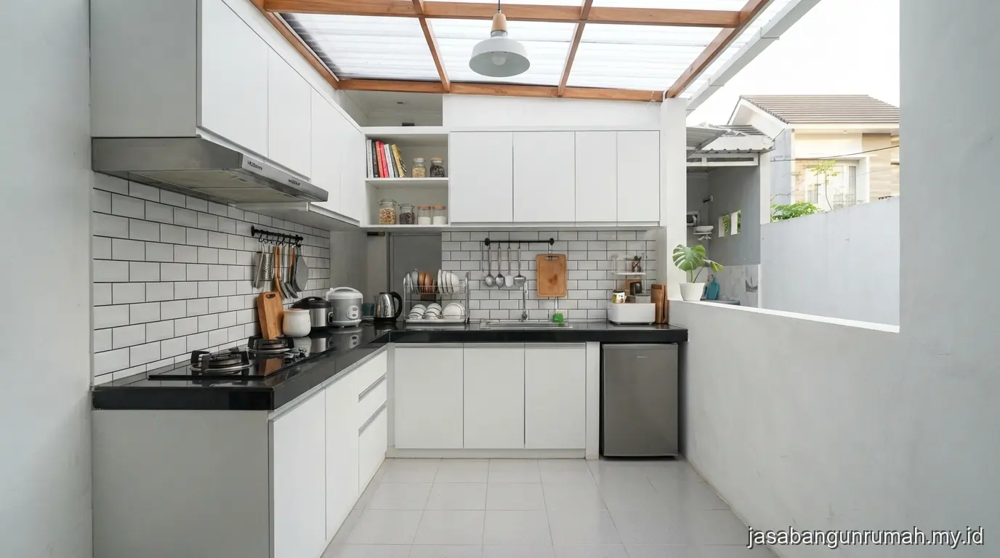
Inspirasi Ide Renovasi Rumah Subsidi Bagian Belakang: Dapur dan Kamar Mandi
Cari inspirasi renovasi rumah subsidi bagian belakang untuk dapur dan kamar mandi? Simak idenya dan konsultasikan denah tambahan Anda di sini.
Baca Selengkapnya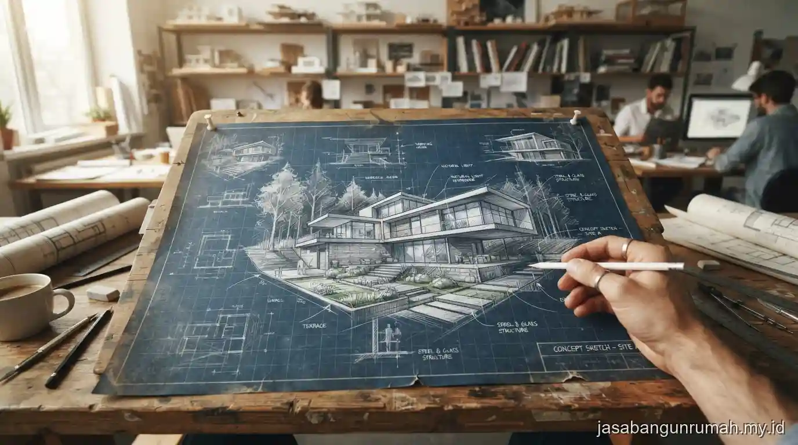
Cara Kerja Jasa Arsitek Profesional: Dari Sketsa Ide Hingga Gambar Kerja Detail
Ingin tahu alur kolaborasi dengan jasa arsitek dari sketsa ide hingga gambar kerja detail? Simak tahapannya dan cek estimasi biayanya di sini.
Baca Selengkapnya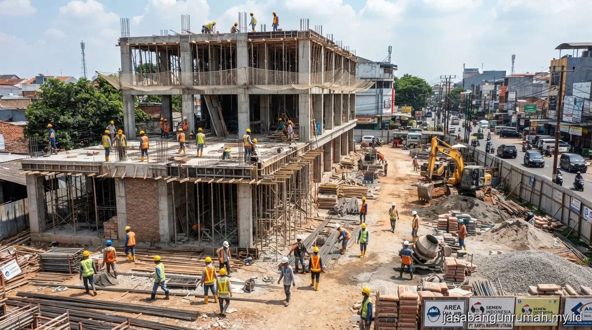
Jasa Kontraktor Bangunan Tangerang: Spesialis Ruko, Gudang, dan Kantor Kecil
Butuh jasa kontraktor bangunan Tangerang untuk ruko, gudang, atau kantor kecil? Survey dan estimasi biaya gratis, hubungi tim kami sekarang.
Baca Selengkapnya
7 Tahapan Pembangunan Rumah dari Nol Hingga Serah Terima Kunci
Ingin tahu proses bangun rumah dari nol hingga serah terima kunci? Simak 7 tahapan pembangunan rumah berikut sebelum memulai proyek Anda.
Baca Selengkapnya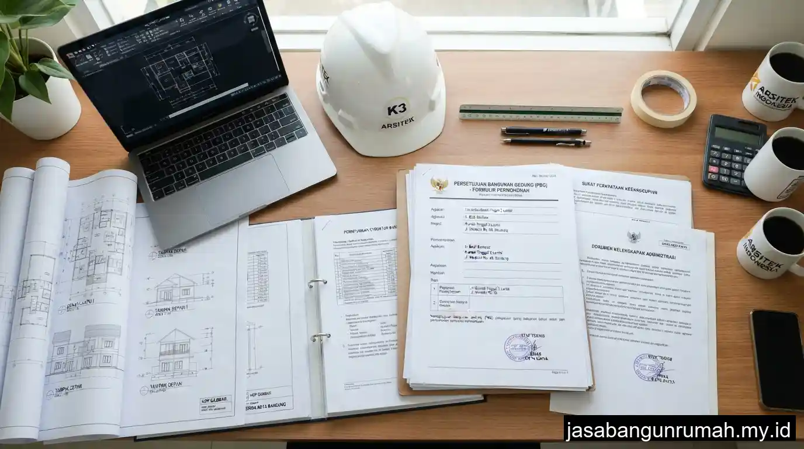
Syarat Mengurus IMB (Izin Mendirikan Bangunan) / PBG Terbaru: Dokumen dan Alur
Bingung syarat dan alur mengurus PBG pengganti IMB? Simak dokumen yang dibutuhkan dan alur prosesnya, lalu cek estimasi biayanya di sini.
Baca Selengkapnya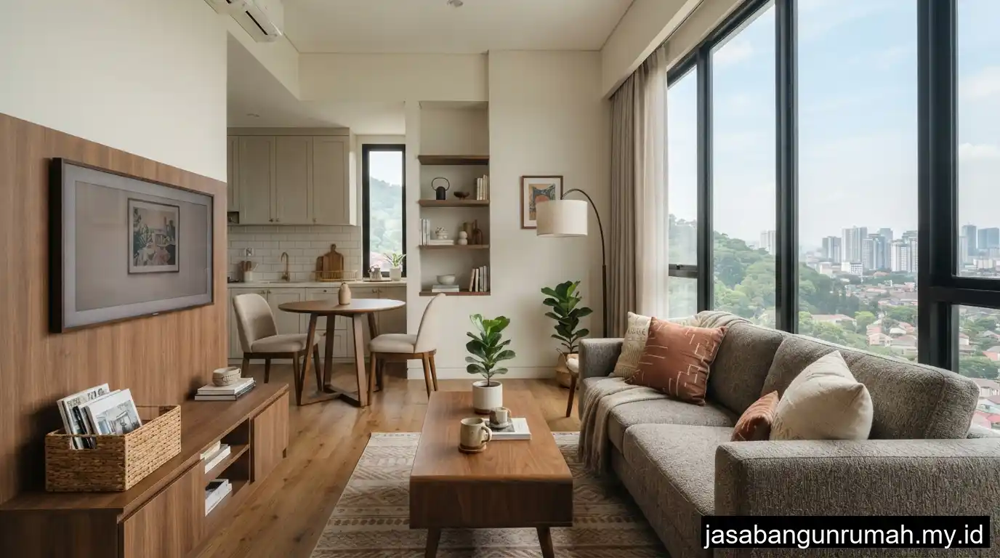
Jasa Desain Interior Bandung: Rumah dan Apartemen dengan Hasil Real Estetik
Cari jasa desain interior Bandung untuk rumah atau apartemen dengan hasil real dan estetik? Konsultasi konsep gratis, hubungi tim kami sekarang.
Baca Selengkapnya
Jasa Renovasi Rumah Bekasi, Atap, Dinding, Cat Ulang
Cari jasa renovasi rumah Bekasi untuk perbaikan atap, dinding retak, atau cat ulang? Survey lokasi gratis, hubungi tim kami hari ini juga.
Baca Selengkapnya
7 Tren Desain Interior Rumah Mewah 2026
Ingin ruangan terlihat lebih luas dan mewah? Simak 7 tren desain interior rumah 2026 berikut ini lalu konsultasikan konsep favorit Anda.
Baca Selengkapnya
Estimasi Biaya Bangun Rumah per M2 2026, Cek di Sini
Butuh gambaran biaya bangun rumah per meter persegi tahun 2026? Simak estimasi standar sederhana hingga mewah dan cek simulasinya sekarang.
Baca Selengkapnya
5 Tanda Rumah Harus Segera Direnovasi Sebelum Terjadi Kerusakan Fatal
Kenali 5 tanda rumah harus segera direnovasi sebelum kerusakan makin parah. Simak penjelasannya dan konsultasikan kondisi rumah Anda sekarang.
Baca Selengkapnya
Beda Arsitek dan Drafter: Jangan Salah Pilih untuk Gambar Desain Rumah Anda
Bingung pilih arsitek atau drafter untuk gambar rumah Anda? Kenali perbedaan tugas, biaya, dan kapan masing-masing dibutuhkan di sini.
Baca Selengkapnya
Jasa Kontraktor Rumah Jakarta: Pembangunan Tepat Waktu, Garansi Struktur 10 Tahun
Cari jasa kontraktor rumah Jakarta yang tepat waktu dan bergaransi struktur 10 tahun? Konsultasi dan survey lokasi gratis, hubungi tim kami sekarang.
Baca Selengkapnya
Bangun Rumah Sendiri vs Kontraktor: Mana Lebih Untung?
Bingung membangun rumah sendiri atau pakai jasa kontraktor? Simak perbandingan biaya, waktu, dan risikonya sebelum memutuskan di sini.
Baca Selengkapnya
Cara Membuat RAB Rumah Sendiri Pakai Excel untuk Pemula
Ingin menyusun RAB rumah sendiri secara presisi di Excel? Ikuti panduan langkah demi langkah untuk pemula ini dan cek estimasi biayanya.
Baca Selengkapnya
Jasa Arsitek Jakarta Terpercaya, Konsultasi Gratis
Cari jasa arsitek Jakarta berlisensi dengan portofolio lengkap? Konsultasi awal gratis, hubungi tim kami untuk mulai desain rumah impian Anda.
Baca Selengkapnya
Jasa Renovasi Rumah Jakarta: Renovasi Sebagian hingga Total, Garansi Bocor
Butuh jasa renovasi rumah Jakarta yang bergaransi? Kami melayani renovasi sebagian hingga total. Konsultasi dan survey lokasi gratis, hubungi sekarang.
Baca Selengkapnya
Bata Merah vs Hebel: Mana Lebih Kuat dan Hemat?
Bingung pilih bata merah atau hebel untuk dinding rumah? Simak perbandingan kekuatan, harga, dan waktu pasang lalu cek estimasi biayanya di sini.
Baca Selengkapnya
15 Inspirasi Desain Rumah Minimalis Modern 2026: Hemat Lahan dan Fungsional
Cari inspirasi desain rumah minimalis 2026 yang hemat lahan dan fungsional. Lihat 15 idenya dan konsultasikan denah impian Anda sekarang.
Baca Selengkapnya
Panduan Lengkap Memilih Jasa Arsitek Rumah Profesional di 2026
Wujudkan rumah impian bersama jasa arsitek rumah profesional jasabangunrumah.my.id. Konsultasi desain, RAB, hingga pengawasan proyek.
Baca Selengkapnya
Berapa Biaya Jasa Arsitek Rumah? Ini Rincian Lengkapnya!
Simak rincian biaya jasa arsitek rumah dari jasabangunrumah.my.id, mulai perhitungan per meter persegi hingga persentase RAB proyek Anda.
Baca Selengkapnya
5 Inspirasi Desain Arsitektur Rumah Modern Minimalis Terbaik
Lihat 5 inspirasi desain arsitektur rumah modern minimalis dari jasabangunrumah.my.id yang fungsional, estetis, dan siap direalisasikan.
Baca Selengkapnya
Persiapan Penting Sebelum Konsultasi dengan Jasa Arsitek
Ketahui persiapan penting sebelum konsultasi dengan jasa arsitek jasabangunrumah.my.id agar proses desain rumah lebih cepat dan terarah.
Baca SelengkapnyaPunya Pertanyaan Seputar Proyek Anda?
Tim kami siap membantu menjawab pertanyaan teknis maupun anggaran sebelum Anda memulai proyek.
Hubungi via WhatsApp